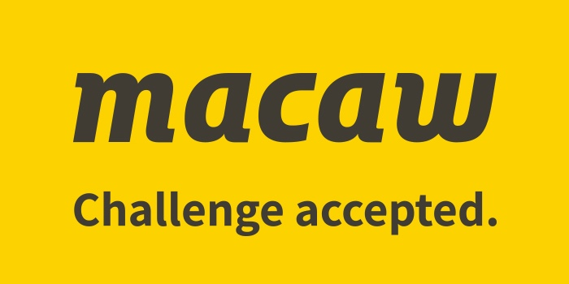
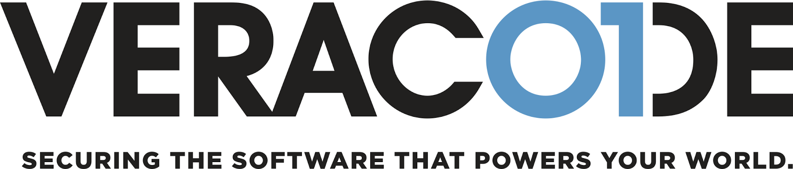

Profession
Some examples of ICT organizations
1. Facebook, Inc.
What the company does
Facebook Inc. is one of the largest technology companies ("Facebook, Inc.", n.d.). Its flagship is Facebook social media service, but the company also owns and maintains other products such as Instagram, WhatsApp, Oculus VR, Giphy, and more
("Facebook, Inc.", n.d.;"Facebook", n.d.)
Culture
In Facebook Inc., employees compete with each other, which motivates them to do better and improve, Facebook Inc. describes it as a hacker culture (Jessica Lombardo, 2018)
Some technologies (pingdom.com, 2019)
Some roles
Computer Network Engineer
Network Engineer designs and manages the global enterprise network. He gathers requirements from internal customers and develops technical solutions to improve the productivity of the services.
(Facebook Careers, 2020)
Data Science Manager
The person in this role oversees big data projects, motivates the team, and coordinates what task should be done.
(Facebook Careers, 2020)
Android Software Engineer
The main focus of this job is to develop new Android applications, add new components, and improve/optimize existing ones. What exact feature to add/change is however not the job of SWE since there are other roles to do this.
(Facebook Careers, 2020)
2. Wargaming Group Limited
What the company does
Wargaming is a game-developing company. It was founded in Minsk (which is my hometown), and headquartered in Nicosia, Cyprus (the place I lived for 6 years). It's most famous creation is World Of Tanks, but they also have developed other games, some of them are alost popular as WoT - World of Warships and World of Warplanes. ("Wargaming (company)", n.d.)
Culture
Wargaming now is a huge company with a lot of branches in different countries, and the culture differs everywhere. Based on the review I saw about working in wargaming in Ukraine, wargaming has teams of very educated professionals, it is interesting to work there since the tasks are always complex and challenging. The people in the teams usually become friends, play games together, and generally spend time aside from work. (Igor Svetikov, 2018)
Some technologies
Some roles
Quality Assurance Engineer
QA Engineer's job is to find bugs in the newly developed components and systems, run tests and ensure that finished products meet the highest standard of quality.
(Wargaming Careers, 2020)
3. Apptension
What the company does
Apptension is a relatively small IT company from Poland. However, it is a quite technological company which develops high-quality products for their clients. The workstyle is closely similar to that of Macaw - they develop the product with the client and assure that it will succeed. ("How we work", n.d.)
Culture
Based on the information I found on Instagram, Apptension is a very close-knit group. Which is not surprising because the team is only about 50 people. They make parties to celebrate each other birthday, they make skype "Meetings for Coffee
eaks" and more. (@apptension, 2020)
Some technologies
Some roles
Frontend Developer
As the name suggests, the job is to create front-end parts of web applications. At Apptension, Frontend Developers work in web-development teams and use Scrum. (Apptension Job Offers, 2020)
4. Google, LLC
What the company does
Google, LLC specializes in Internet-related services and products, which include online advertising technologies, a search engine, cloud computing, software, and hardware. It is considered one of the Big Five technology companies in the U.S. information technology industry, alongside Amazon, Facebook, Apple, and Microsoft. ("Google", n.d)
Culture
Google has a very unique and interesting culture. There is no timetable and employees can work whenever they want. There is a lot of entertainment in google offices, for example, ping pong, video games, and even kickboxing. (Ross Brooks, 2018)
Some technologies
Since Google is an extremely big company that provides a lot of services it uses a lot of technologies - some of which are even developed by google.Some roles
Product Manager
PM organizes product development, working closely with engineering, sales, marketing, and support teams. It connects the technical and business worlds. The goal of PM is to break down complex problems into steps and assign them to other teams.(Google Careers, n.d)
5. Mail.Ru Group, ООО
What the company does
Mail.ru is a huge Russian IT company. Its first product was an e-mail service, but then the company expanded and bought a lot of other Russian IT companies, even VKontakte - Russian Facebook. ("Mail.ru", n.d.)
Culture
Based on reviews, this company doesn't have a very interesting culture, and generally the work in Mail.ru is simple work at the office, but some offices include facilities like gyms or cafes. Reviews also show that there is a very poor connection between administration and employees, they often have conflict. (Reviews from neorabote.net, 2020)
Some technologies
Some roles
QA Engineer: Automation Java
As in other companies, at mail.ru this job is to create/develop systems that perform automatic tests to ensure that the product developed by the company doesn't have any bugs. (Team Mail.ru, n.d.)
QA Manager
This role leads the team of Quality Assurance Engineers, assign tasks to them, motivate, and hires new stuff. (Team Mail.ru, n.d.)
Extra: Companies from the presentations
1. Macaw
What the company does
Macaw helps other companies to solve complicated problems related to IT and business. They not only make some kind of product for their client but also take responsibility to make sure that this product solves the problem completely. Macaw highly involves (challenges) the client in working on the solution.
(Marc Lelijveld, 2020Marc Lelijveld is a Data & Analytics Consultant at Macaw. He gave a presentation of his company on 30-09-2020, specially for HZ University.
)
Culture
Macaw members call their company a 'Great Place to Work'. Employees are motivated and happy, there is a massive diversity of staff members: tech saviors, design talents, data nerds, and social top people. (macaw, n.d.)
Some technologies
Some roles
Data Engineer
At Macaw, Data Engineers work in teams, developing applications for data analysis, together with the client. (Macaw, n.d.)
Senior Project Manager
SPM leads the team in developing a successful IT solution for the customer. At Macaw, he connects the customer and the team, involving both sides to the process.(Macaw, n.d.)
2. Your Surprise
What the company does
Your surprise is a company located in Zeeland and its flagship is creating personalized gifts. It is not exactly an IT company but it has its own IT branch for IT stuff (for example, to create and manage the website) and don't rely on third-party companies to do that. Your surprise also provides IT-related internships that students can take.
(Arne Timmerman, 2020Arne Timmerman is a CTO at Your Surprise, he did a presentation of the company on 02-10-2020 specially for HZ university.)
Culture
People at Your Surprise are very close to each other. The company has its own campus for employees. Furthermore, employees often gather for events, spend vacations together. They have a very active WhatsApp group where they text not on work subjects, but because they are friends.
(Arne Timmerman, 2020Arne Timmerman is a CTO at Your Surprise, he did a presentation of the company on 02-10-2020 specially for HZ university.)
Some technologies
Some roles
Printer Specialist
This person is an expert in colors and printing. He is responsible to repair the printer when it breaks and ensures that printing production looks the best. (Your Surprise, n.d.)
3. Veraode
What the company does
Veracode is an application security company. It provides services for analyzing other software code for security leaks. It's not independent (owned by Broadcom), but a big company with offices all across the world. ("Veracode", n.d.)
Culture
Veracode always strives to improve its staff by teaching and challenging them. They give lectures and even organize hackathons for their employees. Lectures, practice, and hackathons: working at Veracode reminds me of studying at HZ. ("Our Culture", n.d.)
Some technologies
Since Veracode develops software to check other software, they need to make sure their software can find leaks in any type of software, so Veracode works with almost any used in IT non-deprecated technology.
Some roles
Data Engineer
Creates new modules for data analysis software, maintains/troubleshoots existing ones. He needs to have great knowledge of data science to do this job. (Veracode, n.d.)